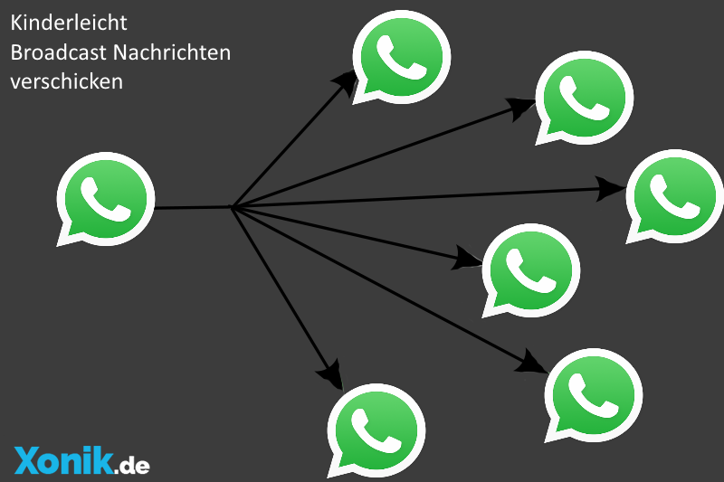
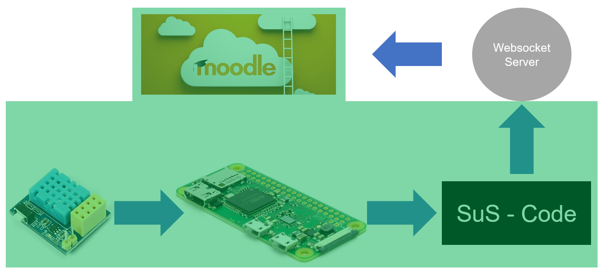

Schickt bspw. ein Client eine Nachricht an den Server, so sendet der Server an alle die Nachricht

Prinzip des Websockets?
Im Prinzip funktioniert ein Websocket wie eine Whatsapp-Broadcast
WebSocket
Die ganze Zeit höre ich Websocket, wie funktioniert das denn jetzt?
Websocket ist recht einfach einzurichten. Normalerweise muss man sich noch einen Server
initialisieren, der sich mit Websocket-
clients verbindet. Wir verwenden allerdings einen externen Server. Hier ein Auschnitt, wie sich ein
HTML-Client verbinden muss.
wsUri = "wss://connect.websocket.in/...; websocket = new WebSocket(wsUri);
Konkret: Wir wollen Daten von SuS auslesen lassen. Diese Daten sollen an ein Websocket geschickt werden, der wiederum mit Moodle verbunden ist. Moodle zeigt die Daten dann an

Von der Idee zur Umsetzung
Meine Aufgabe: Simulation der Hardware, um zu testen, ob Moodle Daten empfangen kann und zur anzeigen bringen kann
Ist ja klar. Moodle basiert ja auf einem HTML Code und JavaScript geht auch
02. Allerdings...
Bietet das neues Potential für solche Anwendungen.
03. Denn...
Wird solch eine Seite in Moodle geöffnet führt das JavaScript den Code indiviuell für jede Instanz neu aus.
04. Und das bringt mir genau was?
Jede Teilnehmer kann sich individuelle Websocket-Server Öffnen und mit ihnen kommunizieren, ohne großen Aufwand! Mit jeder neu geöffneten Seite wird eine neue Verbindung aufgebaut.
Fakten
1. Das ist GEIL!
2. SuS können im eigenen Tempo mit dem Frontend arbeiten
3. Man kann sich auf das Wesentliche konzentrieren!
4. Man kann gute abwechslungreiche Gruppenspiele mit den SuS spielen
5. SuS werden mehr motiviert sein
Ausblick
Speicherung der Daten
Wenn man den Browser aktualisiert sind die Daten verloren. Das kann ein Nachteil sein. Besser wäre es, wenn die Daten gespeichert wären
Schönere Kurse erstellen
Mit diesem Modell könnte man sich anschaulichere Moodle Kurse erstellen
Der ultimative Moodle Kurs?
Etwas übertrieben. Aber man muss sich vorstellen, wass alles in Moodle mit den Websockets möglich wäre. In der elektrotechnik könnte man interaktive Kurse damit durchführen und die SuS könnten sich durch SoL weitereintwickeln!
Aber...
Das alles kann recht aufwendig sein... Dafür braucht man viel Zeit und ein komplettes didaktisches Konzept dahinter. ... man darf ja noch Träumen